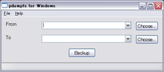

English | Japanese
pdumpfs: a daily backup system similar to Plan9's dumpfs
Last Modified: 2004-12-20 (Since: 2001-02-18)
What's pdumpfs?
pdumpfs is a simple daily backup system similar to Plan9's dumpfs which preserves every daily snapshot. pdumpfs is written in Ruby. You can access the past snapshots at any time for retrieving a certain day's file. Let's backup your home directory with pdumpfs!
pdumpfs constructs the snapshot YYYY/MM/DD in the destination directory. All source files are copied to the snapshot directory for the first time. On and after the second time, pdumpfs copies only updated or newly created files and stores unchanged files as hard links to the files of the previous day's snapshot for saving a disk space.
- 2004-12-15: pdumpfs 1.3 Released!
- An error message for Windows has been fixed
- 2004-08-11: pdumpfs 1.2 Released!
- The options --quiet (-q), --dry-run (-n) has been added
- The 31 days limit of finding the last backup
for incremental backup has been abolished
- A feature that creates `latest' symbolic link referring
to the latest backup has been added
- Other small modifications has been made
- 2004-07-13: pdumpfs 1.1 Released!
- A bug in error message handling has been fixed
- Other small modifications has been made
- 2004-06-22: pdumpfs 1.0 Released!
- 2004-05-11: pdumpfs 0.9 Released!
- Some bugs has been fixed including "unexpected next" bug
- A Windows binary is now available experimentally using
Exerb
- 2001-02-19: pdumpfs 0.1 Released!

This is a screenshot of pdumpfs working on Windows XP.
Requirements
Installation
To install pdumpfs from the source code, unpack the package
and run make and copy the resulting
pdumpfs file to your bin directory such as
/usr/local/bin.
Usage
Command Line
% pdumpfs <source directory> <destination directory>
Example
To backup your home directory /home/yourname to /backup, run the following command.
% pdumpfs /home/yourname /backup >/backup/log 2>/backup/error-log
On and after the second day, it is a good idea to invoke the backup command with cron daemon. The following setting allows you to backup your home directory every 5 a.m.
00 05 * * * pdumpfs /home/yourname /backup >/backup/log 2>/backup/error-log
If the backup system works well, you can retrieve a certain day's file with a file name like /backup/2001/02/19/yourname/...
Excluding Files
To exclude particular files from a backup,
you can use the following options.
- --exclude=PATTERN
- Exclude files or directories matching PATTERN (Regular Expressions in
Ruby) from a backup. You can specify the option as many you like.
The pattern matching is performed for paths of source files.
If the `source directory' given by the command line is a
relative path, pattern matching is performed for relative
paths including the given path itself. If the `source
directory' is an absolute path, pattern matching is
performed for absolute paths.
- --exclude-by-size=SIZE
- Exclude files larger than SIZE from a backup. You can
specify SIZE like 100, 100K, 10M, and 1G.
- --exclude-by-glob=GLOB
- Exclude files matching GLOB from a backup. fnmatch(3)
(shell globbing) to the basename of a file is used for matching.
You can specify the option as many you like.
Examples
# Exclude files and directories matching "spool" or "log" from a backup.
% pdumpfs --exclude 'spool|log' /var /mnt/backup
# Exclude files larger than 10MB from a backup.
% pdumpfs --exclude-by-size 10M ~/ /mnt/backup
# Exclude wave files (*.wav) from a backup.
% pdumpfs --exclude-by-glob "*.wav" ~/ /mnt/backup
Limitation
- pdumpfs can handle only normal files, directories, and symbolic links
- pdumpfs is not suited for a directory containing large files which update frequently
- With pdumpfs, you can easily remove unnecessary files because the past files can be retrieved at any time. However, please do not put too much confidence in pdumpfs. pdumpfs may have serious bugs
Tips
- If files are increased by 10 MB everyday, about 4 GB disk space is consumed by one year. It is not too much, considering the recent evolution of computer resources
- Backup your files to a physically separated device
- With a linux ext2/ext3 filesystem, files can be immutable with chattr command. To make all files in /backup immutable, run
chattr -R +i /backup with the root privilege. chattr command keep you from doing rm -rf backup files by accident
pdumpfs is a free software with ABSOLUTELY NO WARRANTY under the terms of the GNU General Public License version 2.
Links
Satoru Takabayashi
{kind=link}